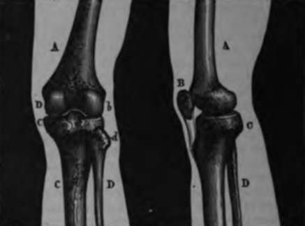
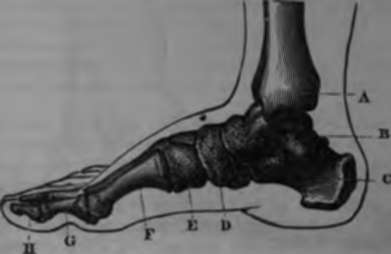
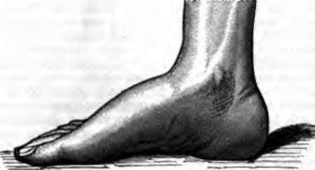

Lower Or Abdominal Limb
Description
This section is from the book "Wonders Of The Human Body", by Auguste Le Pileur. Also available from Amazon: Wonders of the Human Body.
Lower Or Abdominal Limb
It is composed, like the upper limb, of four parts—the hip, thigh, leg, and foot The two bones of the hip, or pelvic bones, articulate together and with the sacrum; this last, placed between the two like a wedge, transmits by their means the weight of the body to the lower limbs, which are the pillars of the human edifice. On the external face of each pelvic bone we see a deep, hemispherical, articular cavity. This is the cotyloid cavity, which receives the head of the thigh-bone, and forms with it the articulation of the hip. The femur or thigh-bone is the longest and strongest bone in the skeleton; it is almost cylindrical, and is curved outward, which gives it greater strength. At its upper extremity we see the head of the femur, supported by a neck which is united to the body of the bone at an obtuse angle. This obliquity has the effect of increasing the distance between the two femurs, and in consequence between the two lower extremities, thus giving to the body a larger base and greater stability. Another result is, that the weight of the body is transferred to the femur, but not directly and in a right line; the necks of the two femurs form by their union part of an arch upon which rests the upper portion of the cotyloid cavity, and thus divides the force acting upon the lower limbs.
The head of the femur represents nearly two-thirds of a sphere. It exactly fills the cotyloid cavity, but is not itself all inclosed in it, as the depth of the cavity does not exceed half the diameter of the sphere to which it belongs. A very elastic, circular, fibro-cartilaginous ring surrounds the edge of the cotyloid cavity, increasing its size, embracing the head of the femur; and acts as a valve and hermetically closes the articular cavity in which the head of the femur is retained by atmospheric pressure alone. In fact, if we place this articulation, properly prepared, under the receiver of an air-pump, we shall see, as a vacuum is produced, the head of the femur gradually slip down and leave the cotyloid cavity as far as the ligaments will permit, and when air is again admitted into the receiver, it resumes its place in the cavity. This beautiful experiment of E. Weber shows in a striking manner the direct and constant influence of external agents on the functions of the organism.
The inclosing of the head of the femur in the cotyloid cavity gives the articulation of the hip great solidity, which is augmented by the muscles and ligaments which hold the parts together as well as give them motion, so that it is only by the greatest violence that the head of the femur can be forced out of this cavity. This articulation, which is of the same nature as that of the shoulder, permits the movement of the lower limb in every direction, though to a less extent than that of the arm. We shall again have occasion to discuss this movement.
The lower extremity of the femur ends in two oblong, rounded masses, which are called the condyles of the femur, which rest in two cavities in the superior portion of the principal bone of the leg, or tibia, and form with them the articulation of the knee. The semi-lunar cartilages, interposed between the two bones, diminish the pressure of the femur on the tibia, and prevent the displacement of the former by increasing the surface and depth of the articular cavity. In front of the knee-joint is placed the patella or knee-pan, the largest of the sesamoid bones, which adapts itself by two articular facets to those presented by the condyles of the femur, and gives attachment by its upper border to the tendon of the extensors of the leg, while by its lower border it is intimately united to the ligament of the knee-pan, which fastens it to the tibia. In comparing the elbow with the knee, we perceive the striking similarity of the knee-pan to the olecranon. The knee-pan serves as a pulley for the extensor-muscles, the action of which upon the leg is increased by the change of direction given to them, while the olecranon is a powerful lever, by means of which the fore-arm is extended.
Fig. 17. Knee-joint.
Front view. Side view.
A. Femur. A. Femur.
D, Condyle! of femur. B. Knee-pan.
D. Upper extremity of fibula. C. Tibia.
C Tibia. D. Fibula. D. Fibula.
The second bone of the leg is the fibula, which is parallel to the tibia, and with it forms the articulation of the foot This bone, which takes no part in the articulation of the knee, yet represents the ulna, which plays so important a part in the formation of the elbow, while the tibia corresponds to the radius. Nature, by one of those transformations of which she furnishes numerous examples, has united the two extremities of the ulna and radius in one, allowing the first of these bones to exist only as a rudiment in its upper portion. This blending of two organs is termed by naturalists a coalescence. The resemblance of the tibia to the radius was remarked by De Blainville, and has been demonstrated by M. Martins in his beautiful work on the pelvic and thoracic limbs.
The lower extremities of the tibia and fibula united form a mortise, in which the astragalus, one of the bones of the tarsus, is received, and thus constitute the tibio-tarsal articulation, or articulation of the foot. The foot moves upon the leg in such a manner as to form with it a straight line when extended. The movement in an opposite direction, or flexion, is much more limited, the two malleoli which embrace the astragalus not permitting lateral movements in the foot, those which do take place being made by the articulation of the astragalus with the other parts of the tarsus, though a limited movement of circumduction can be made by the foot.
It has been said that the foot is another hand—-pes altera manus—and if the hand completes the arm, so does the foot complete the leg. Without it locomotion could not be effected except by movements quite different from those of walking, and under conditions of equilibrium much less favourable, and with much greater fatigue; running, and consequently jumping, would be impossible. But if the foot and the hand are varieties of the same type of organization, they present differences in regard to their respective uses; the foot, designed to support the body, is especially remarkable for its solidity; in the hand mobility is the predominating quality.
The foot of man, exclusively designed for the support of the body, is not an organ of prehension, and cannot, like the foot of the monkey, take hold of objects by opposing the thumb to the other fingers; the toes, disposed upon the same plane, have neither the length of the fingers nor the extent and variety of their movements; in a word, it is a foot and not a hand, as it is in the quadrumana.
The foot is composed of twenty-six bones, seven of which constitute the tarsus, which articulates with the leg and corresponds to the carpus. Five bones form the metatarsus, which corresponds to the metacarpus, and articulates with the tarsus behind and with the toes in front. The foot is narrow and thick in its posterior part, thinner and broader anteriorly; it forms a right angle with the leg, and rests upon the ground at the extremities only. The middle portion is in the form of an arch, and in consequence resists shocks and supports pressure much better than it could if it were flat and touched the ground throughout its whole length. And although the parts are very firmly united together, there is sufficient mobility to give great elasticity to the whole, and this elasticity is augmented by the toes. The foot thus supports the weight of the body like an arch and spring combined, giving it in this way great advantage in resistance. And lastly, in jumping from a height it extends itself instinctively, and touches the earth first at its point only, so as to break the shock. This distribution of force, which results from the form and the elasticity of the foot, not only protects its mechanism, but also avoids the grave injuries which might be produced in certain organs, such as the brain and the liver, by the rebound.
Fig. 18. Skeleton of the foot.
A. Internal malleolus, lower extremity of tibia.
B. Astragalus. C Calcaneum.
D. Scaphoid.
E. Cuboid.
F. First metatarsal.
G, H. First and second fluilanx of the great toe.
Fig. 19. The foot.
If we compare the upper and the lower limbs taken as a whole, we shall remark among their principal distinguishing characteristics, that the flexion of the fore-arm upon the arm takes place in a forward direction, while that of the leg is backward. M. Martins has demonstrated that this opposition in their movements, necessitated by their destination to different functions, is due to the twisting of the humerus. The femur is a straight bone and not twisted upon its axis. The humerus, on the contrary, is turned on itself 1800, or half the circumference. This is not the result of the mechanical action of the muscles and of the function of the upper limb; although the form of the bone does not permit this peculiarity to be anatomically recognized till about the second year, it exists virtually as soon as the bone is developed. Muscles, vessels, and nerves all follow this rotating movement indicated by the spiral disposition of the humerus, and most anatomists have pointed it out without hinting at the physiological consequences which M. Martins has shown result from it This learned observer has shown that the humerus, artificially untwisted, corresponds in all points with the femur of the same side, and by this manoeuvre in an opposite direction to the work of nature, he has explained the proceeding by which she bent the articulation of the elbow forward and that of the knee backward.
The articulations of the lower limb permit to it a great variety and extent of movement Under the action of powerful muscles it folds back upon itself or becomes a rigid column, raising or lowering with rapidity and facility the body of which it supports the weight In walking it is carried forward or backward, and by turns extended or bent; it turns on its axis or changes from the vertical in order to maintain the equilibrium by the direction of the foot or to enlarge the base of support It can raise itself laterally almost to a right angle with the body, and in front it approaches it still more nearly. In fencing it bends or is extended, raises and lowers the body, and carries it backward and forward-by movements which succeed each other almost as rapidly as those of the arms. But it is especially in the varying steps of a skilful dancer that we can admire the perfection of this mechanism, and all the suppleness, strength, and agility that exercise can give to it.
Continue to:
- prev: The Hand
- Table of Contents
- next: Chapter V. Motion